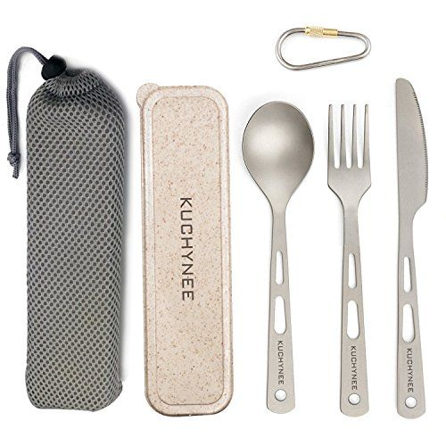
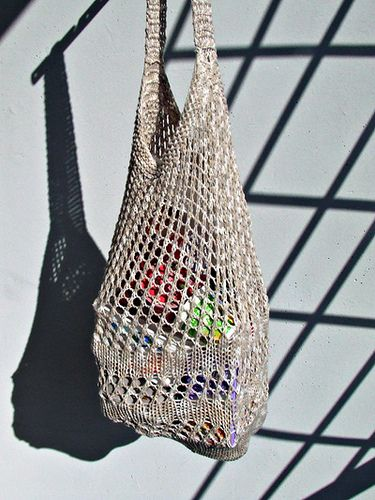
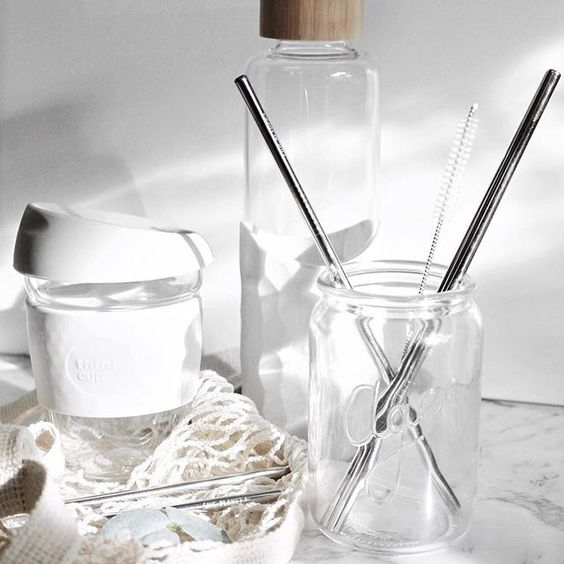
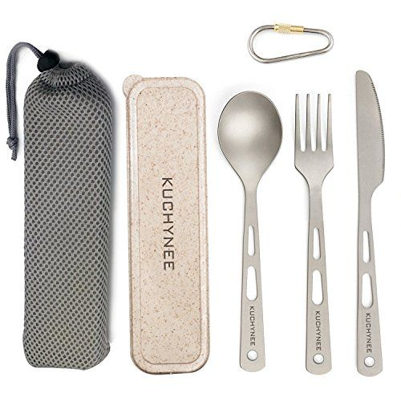
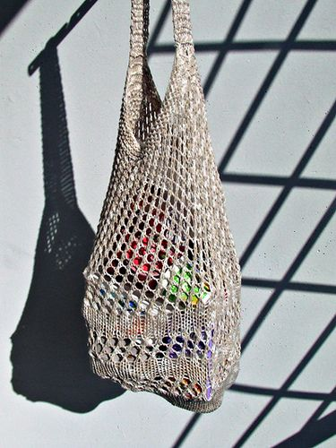
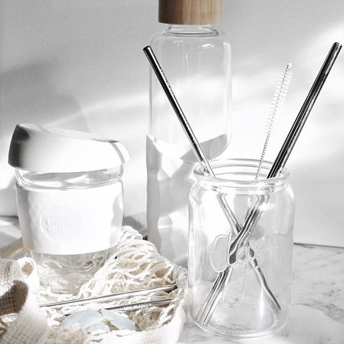

What many of us fail to realize is, our entire economy and society operate within nature. We cannot use more materials or energy than nature can provide, nor can we generate more waste than nature can transform or absorb.Zoe Donat, blogger Mindful Consumerism
 





Logan and Finley is an eco-concious store located in Toronto. They feature eco-friendly, ethically sourced, sustainable goods like clothing, accesories, skincare, gifts that are either locally made, organic, and natural. What Logan and Finley have in mind is a plastic-free world.
Julie Skirving, the creator of the Logan & Finley brand wanted to share her enthusiasm and product expertise with customers in the store. Julie started Logan & Finley after 20+ years in various leadership roles in the outdoor apparel industry. It blends her professional expertise of telling really interesting brand stories with her love of nature, travel and living a healthy lifestyle.
Still having a hard time to catch up with the mindful consumerism era/ trend? Jenny, a content-creator and consultant from Colorado brought her love of fashion and nature to the Big Apple with her. Aside from being known from her sustainable, plastic-free lifestyle, Jenny also has her youtube channel called WearILive , where she talks about a lot about her lifestyle. Making it easier for everyone to follow along!
Kristen is a blogger/ youtuber from Greece. Most of the time, she talks about ethical fashion and calling out fast-fashion brands. She also tries her best to live waste-free. Kristen mostly focuses on cruelty-free wardrobe and lifestyle, she is a proud Vegan! Her videos serves as an inspiration to most people to finally be conscious to what they buy, eat, where it came from, and what it came with. (Were talking about tons and tons of plastics from shampoo bottles to plastic bags)
The truth is, we are all consumers right now. But consider this, this "bandwagon" that we are calling right now might actually help us and the world to be better.